Getting started
AntCalc helps you estimate dimensions, tune a built antenna and save measurement results. It runs on Android 8.0 or later. Calculations, models and built-in guides work offline.
- Download
antcalc.apkfrom the GitHub Direct release you want and open the file on your phone. Use a build with a compatible signature when updating. - Open the ⋮ menu and select Settings. Choose an interface language and the system, light or dark theme.
- Use Antenna dimensions, Antenna tuning or Tools in the bottom bar. Tap the title of a long screen to scroll back to its start.
Sizing and tuning
Starting dimensions
- Open Antenna dimensions and enter a frequency in the selected units. For a dipole at 145.5 MHz, enter 145.5 with MHz selected.
- Find the monopole or dipole length in the results. For a symmetric dipole, check the total length and the length per arm.
- Allow room for tuning when cutting the elements. Use the copy button to save the calculation to a project.
Tuning from a measured resonance
- Open Antenna tuning and choose a monopole or symmetric dipole.
- Enter the target and measured resonant frequencies, followed by the actual length. For a dipole, enter the combined length of both arms.
- If the measured resonance is below target, the app estimates how much to shorten the antenna. If it is above target, the app estimates how much to extend it. Adjust both arms of a symmetric dipole equally.
- Make small adjustments and measure again with the antenna in the same position and the same calibration plane.
Enter the resonance identified in the measurement. If several SWR dips appear in the working range, compare them with the reactance plot and identify the intended antenna mode.

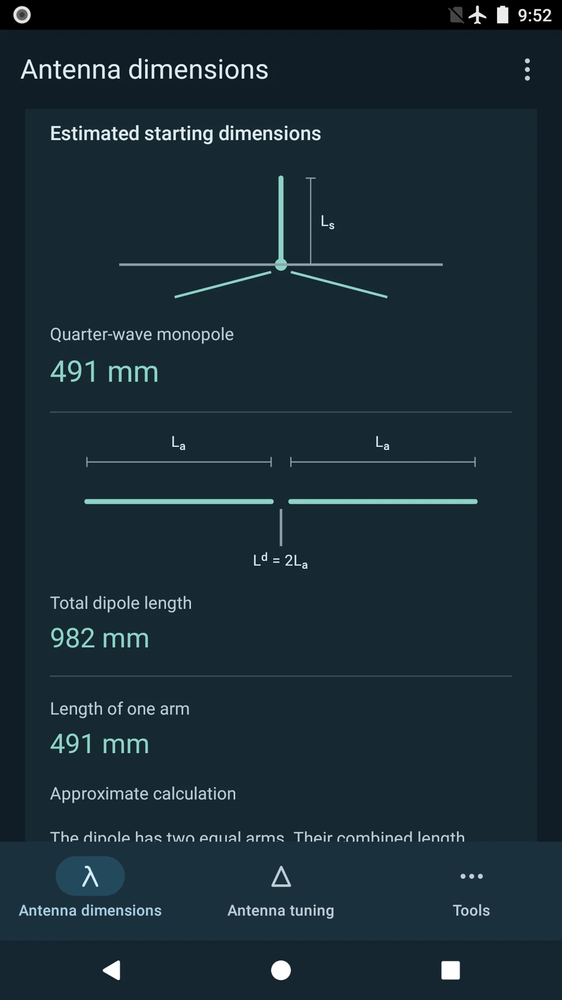

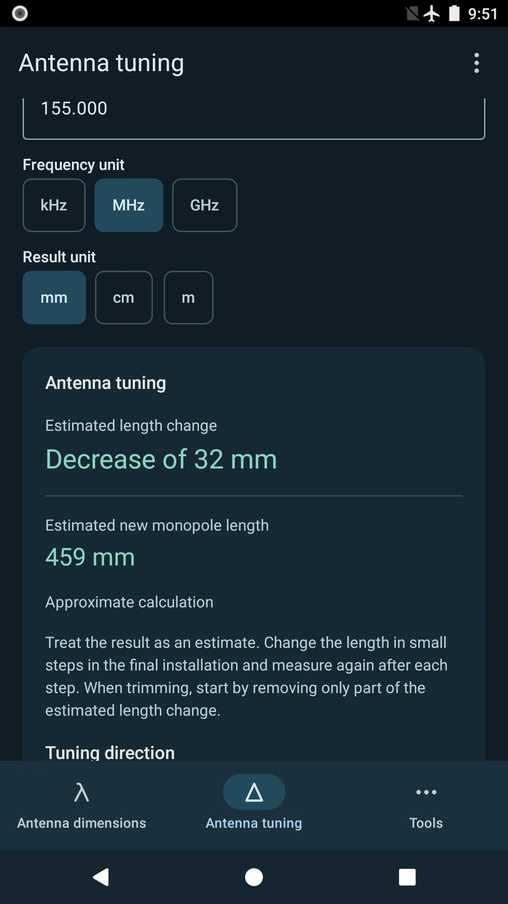
Antenna calculators
Open Tools → Antenna parameter calculators. Choose a design or calculation mode. Check the table units and diagram labels before cutting. If the screen provides a cut list, compare it with the finished part dimensions.
If a result is blank, check the input units and allowed ranges.
| Calculator | What to do |
|---|---|
| Inverted-V dipole and Ground PlaneInverted-V dipoleGround Plane | Enter frequency and design parameters. Check the arm lengths, or the radiator and radials, for the selected setup. |
| Full-wave loopFull-wave loopQuad LoopDelta Loop | Choose Quad or Delta Loop. Calculate perimeter and sides from frequency, or frequency from a known perimeter. Choose the feedpoint shown on the diagram. |
| J-pole and Slim JimJ-poleSlim Jim | Choose a variant or band. Check the lengths, gap and feedpoint against the labelled diagram. Start with the dimensions published for your variant. |
| Yagi–UdaYagi–Uda | Choose an author’s design and mounting variant. Check positions from the reflector, diameters, blanks and boom length. Follow the specified offsets and mounting method for tables based on a fixed setup. |
| Moxon antennaMoxon antenna | Choose a published design or calculate one from frequency and conductor diameter. Use the dimensions and gaps for your selected configuration. |
| HB9CV antennaHB9CV antenna | Choose a published design or calculate by frequency within 100–1500 MHz. Check the phasing line and any fields for dimensions that depend on assembly. |
| CantennaCantenna | Enter a frequency or band, find a diameter and compare candidate cans. Check the probe position and usable band. Use the flat pattern when making a flare. |
| Halo CBHalo CB | Choose a circular or square loop and enter frequency, k and the gap. Check the conductor length on the diagram and review the gamma match. |
| Trap DipoleTrap Dipole | Select R2AUK, VK2EVB or AA4LR and the 20, 40 or 80 m band. Check sections A, B and C and traps T20 and T40. Use the separate LC and coil calculations as needed. |
Models and drawings
Drag across a vector model to rotate it. Double-tap or tap the plus magnifier to open it full-screen. Spread two fingers to zoom and drag with two fingers to pan the model. The minus magnifier and Android Back close the viewer. The construction guide also opens photos and drawings with a double tap or the magnifier. You can zoom, pan and reset their scale.
Trap Dipole
Expand Trap Dipole Designs and Band Behaviour near the bottom to read about W3DZZ and operation on different bands. Open Tuning and measurements to import S1P and analyse SWR within the selected band.

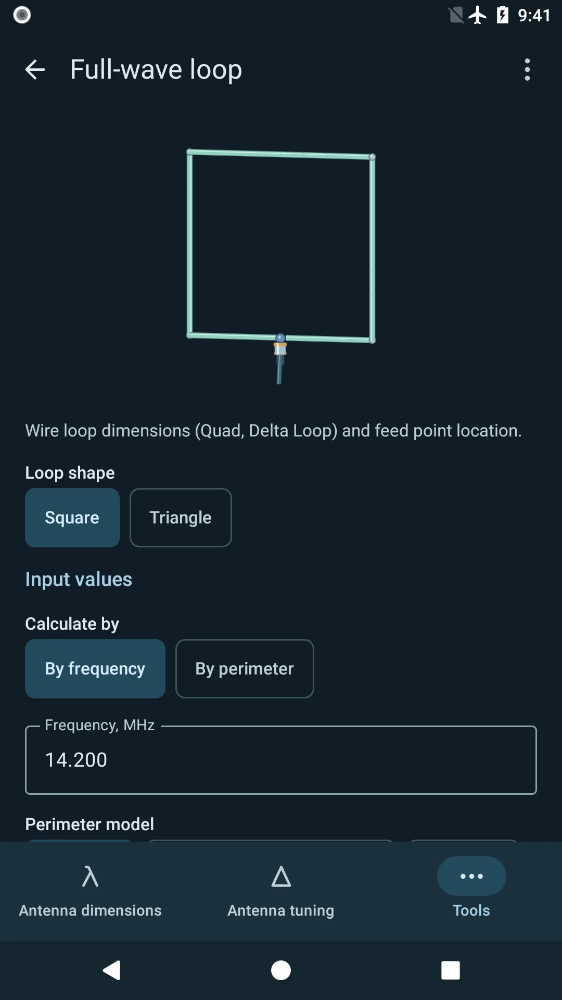

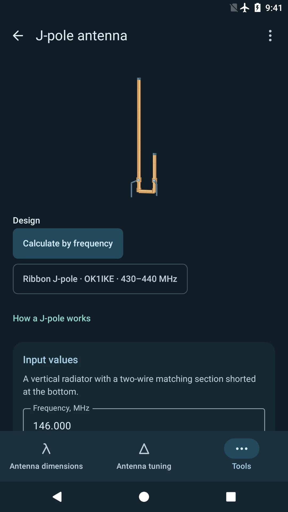

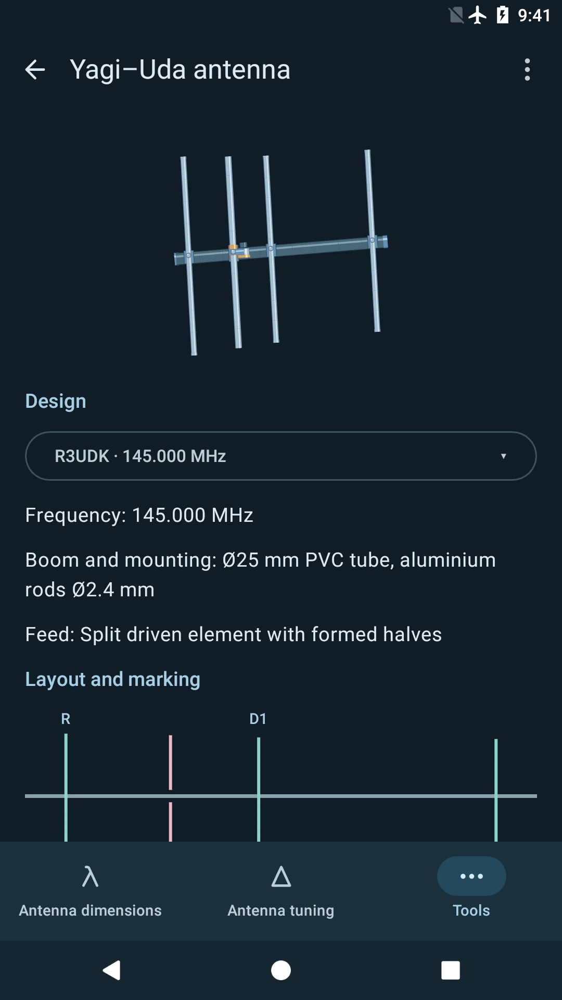

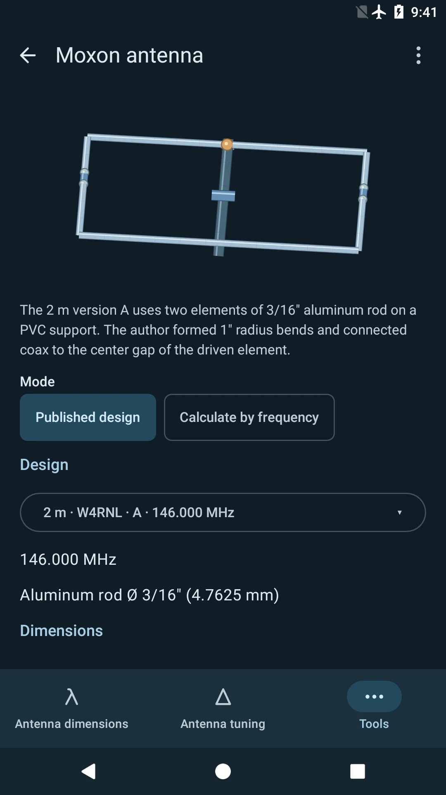

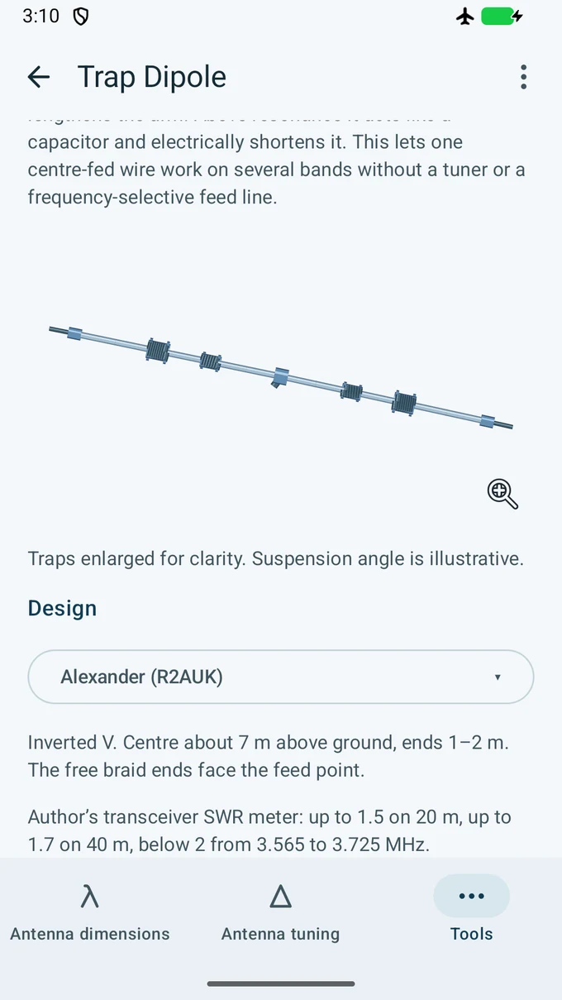

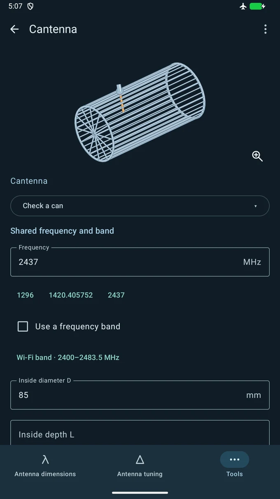

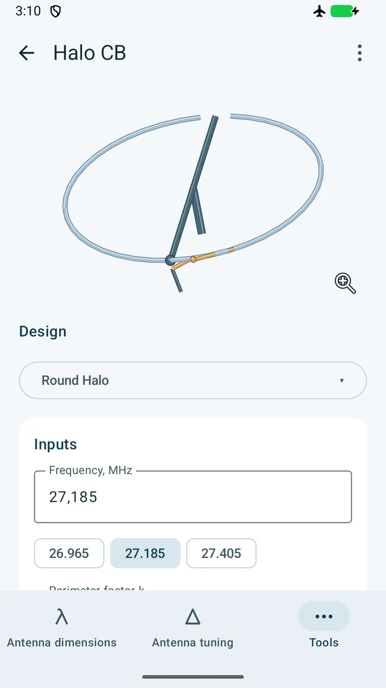

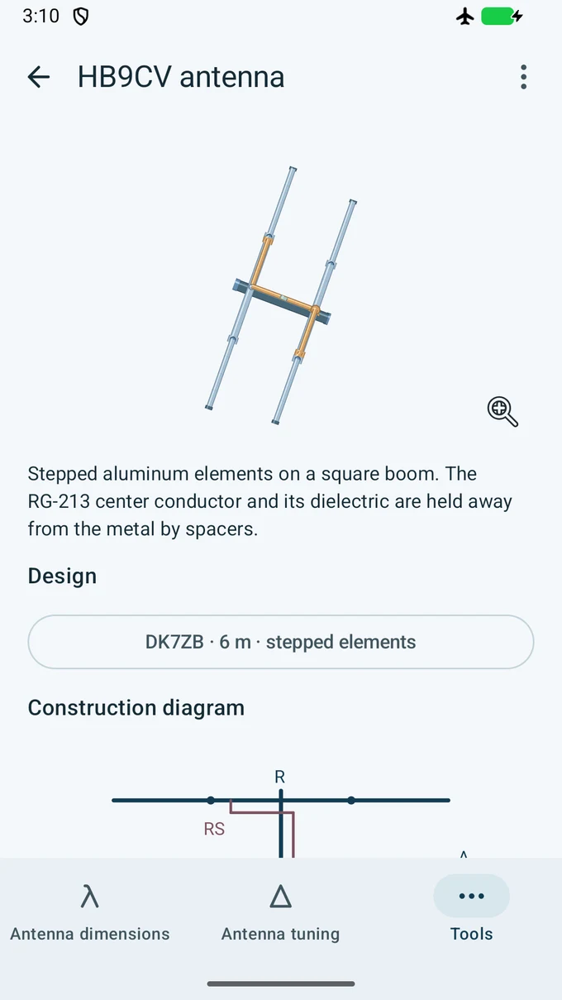

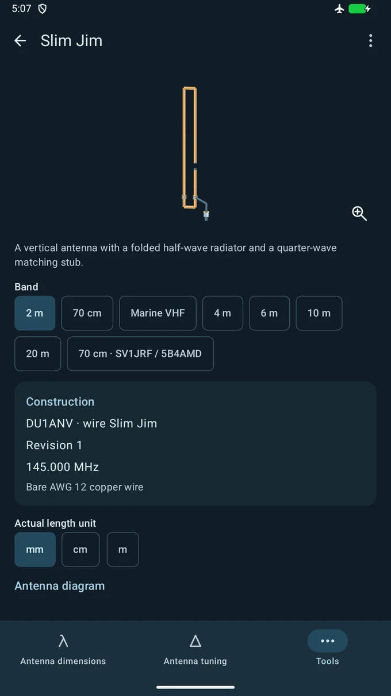
Building the Yagi–Uda
Open Tools → Antenna construction → Yagi-Uda antenna. The guide covers R3UDK’s portable four-element 145 MHz antenna with removable mounts and a PVC boom.
- Expand Layout and dimensions. Positions are measured from the reflector. For the driven element, check the finished span and the blank length before bending.
- Open the materials section to view the mounts and save the bundled STL ZIP when needed. Follow the steps for preparing the mounts, elements and feedline, then assembling the antenna.
- To adjust cut allowances or offsets, tap Open the R3UDK calculator. It opens the matching design profile.
- To save the published design, scroll to the end of the guide and tap Add to project. Choose an existing Yagi project or create one with a target of 145 MHz. The guide saves the published dimensions with zero additional allowance and no custom offsets.
- Once assembled, check SWR and impedance in the intended mounting position. The measurement section links to S1P import.

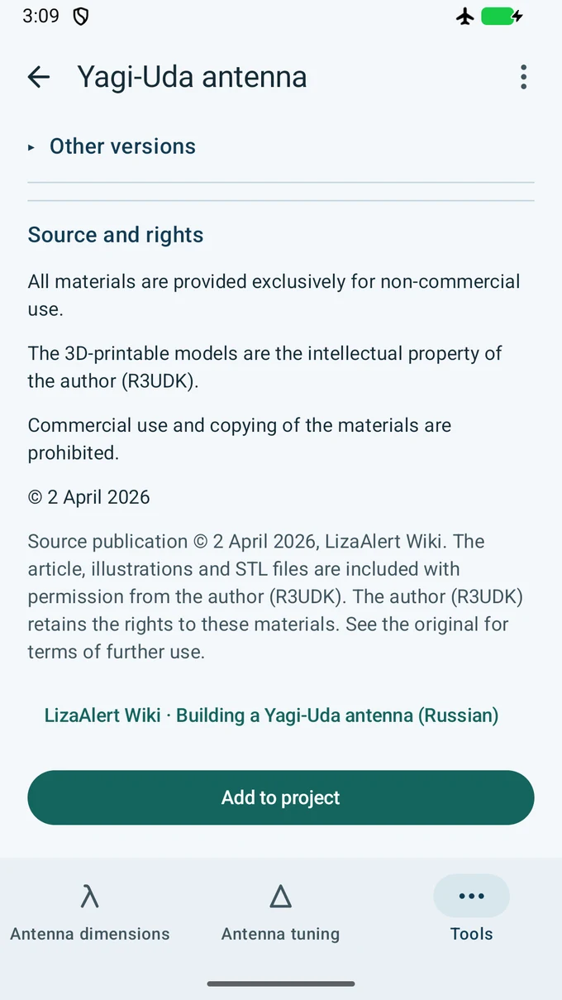

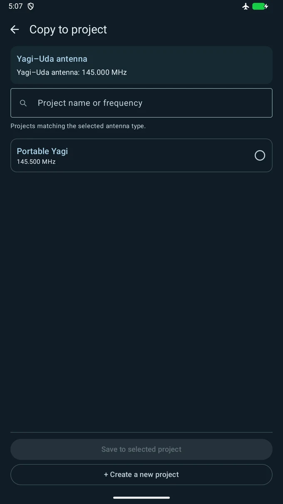
SWR and reflection
- Open Tools → SWR and reflection and select the quantity you know. You can start with SWR, reflection magnitude |Γ|, return loss or complex impedance R + jX.
- When calculating from impedance, enter the reference impedance. Use 50 Ω for a measurement referenced to 50 Ω.
- Review the conversions. At 2:1 SWR, about 11.11% of incident power is reflected. Mismatch loss at the load is about 0.51 dB for unchanged incident power. A transmitter may also reduce its output.

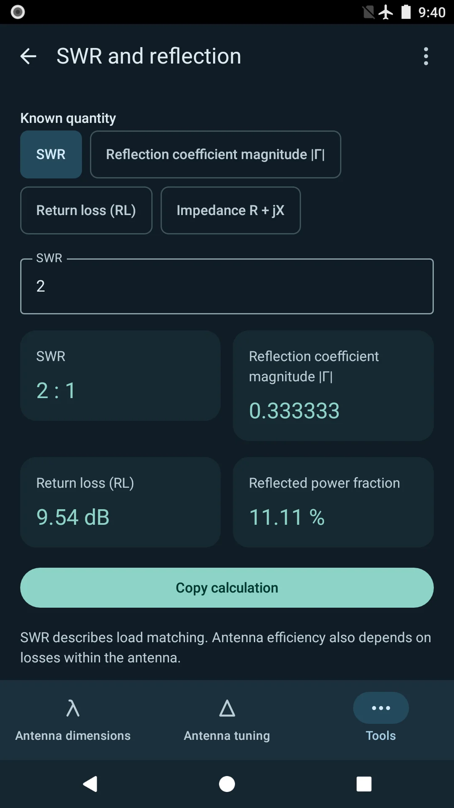
Smith Chart
- Open Tools → Smith Chart and set the load impedance and reference impedance.
- Drag the load marker to see how impedance, SWR and reflection change.
- Change the distance from the load toward the generator to follow the impedance transformation along the line. Use the legend beneath the chart to identify the markers.

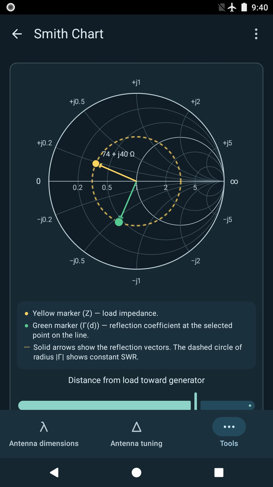
Cable length and feedline loss
Cable electrical length
Open the tool of the same name. Enter frequency, cable velocity factor and the length you know. Choose the conversion direction between physical and electrical length. Phase and delay use the line parameters you entered.
Feedline loss
Enter frequency and length and choose the cable from the catalog. When entering attenuation manually, use the value for the stated frequency and check the units, for example dB per 100 m. The result shows matched-line loss and power at the far end. Use SWR and reflection to estimate reflected power.

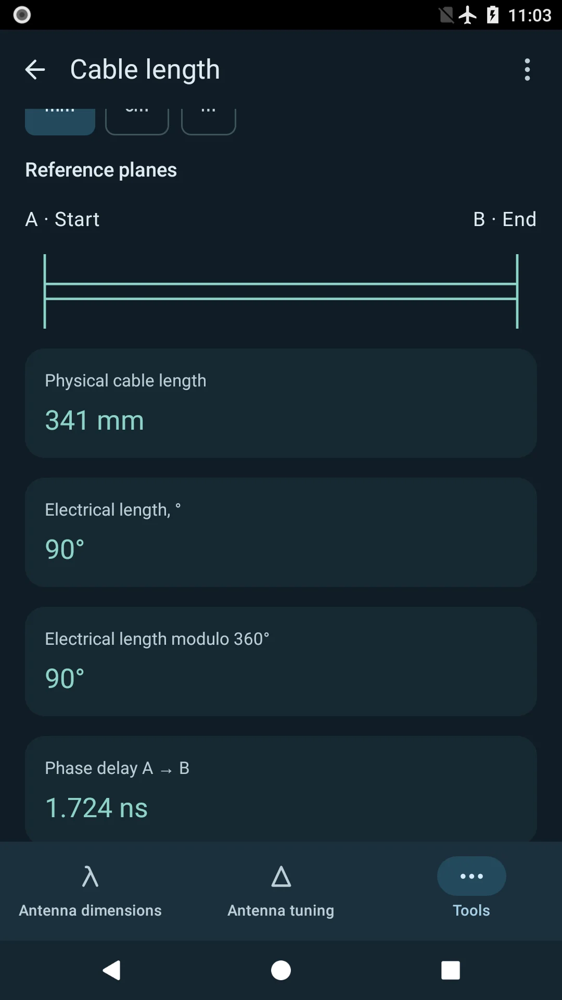

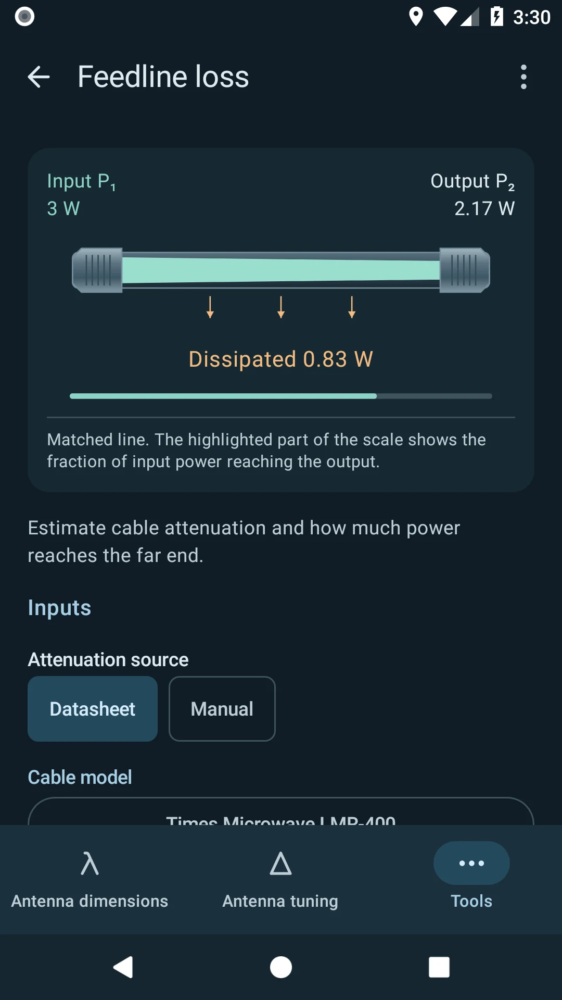
VNA measurements and SWR bandwidth
- Export the S11 sweep from your analyser as a one-port Touchstone
.s1pfile. - Open Tools → Additional tools → Import VNA measurements and tap Open S1P file.
- Set the calibration plane, such as the feedpoint or transceiver end. To compare sweeps, add a second measurement and check frequency overlap, reference impedance and calibration plane.
- Review SWR, impedance and Smith Chart views. Find the SWR minimum, then check where reactance approaches zero. The two frequencies can differ.
- Open SWR bandwidth, select a sweep and set a threshold, for example 2.0. An edge at the sweep boundary means a wider sweep is needed to determine the full bandwidth.
- Use Save to project to keep sweeps with your calculations or measurements.
If an S1P file fails to open, check that your analyser exported a one-port Touchstone file with the .s1p extension.

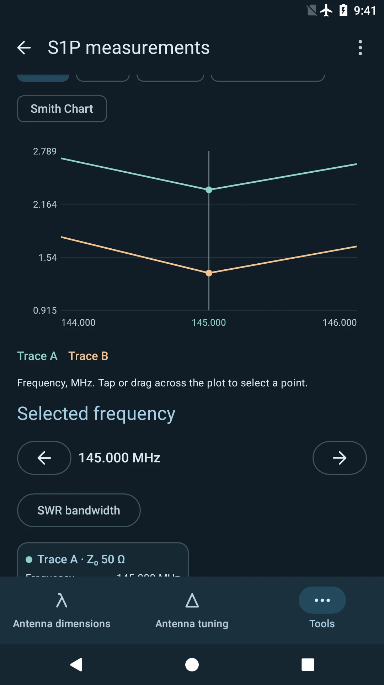
Projects and tuning journals
Finding and reordering projects
On the Projects screen, use the field below the buttons to search by project name, frequency or antenna type. The list filters as you type and highlights matches in yellow. Use a decimal point or comma when entering a frequency.
Press and hold a card, drag it up or down, then release it at the desired position. The app saves the order. When the list is filtered, hidden cards keep their places.
Saving a calculation
- Tap Copy to project in the calculator. In the Yagi guide, the button is labelled Add to project.
- Choose a compatible project and tap Save to selected project, or choose Create a new project and enter a name.
Open a saved calculation from the project journal to see Calculation inputs and Calculation results in separate sections.
Measurements and data transfer
- Open Tools → Projects and tuning journals, choose a project and add a record. Include mounting conditions and measurement results, plus an annotated photo if it helps you reproduce the setup.
- Use Compare records to select two entries. Compare SWR and impedance under the same conditions and at the same connection point.
- Use Export JSON and Import JSON to transfer a project. Import creates a separate project. Use the ZIP export to transfer photos.

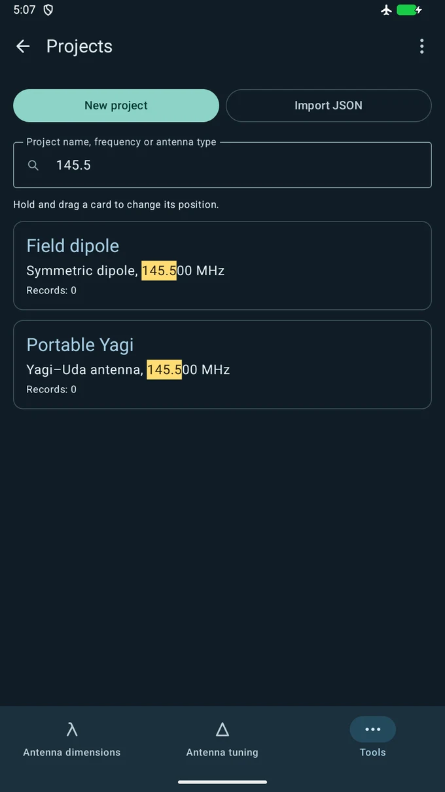

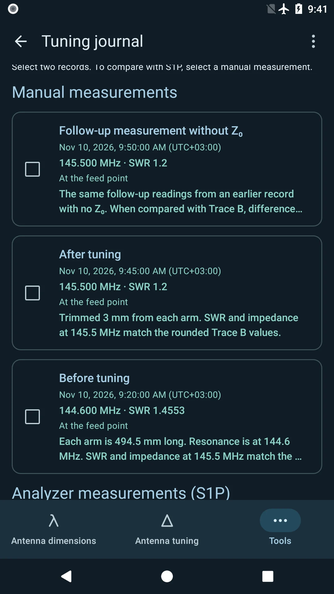
Help and updates
- Help in the menu contains information about the app. References links to articles and formulas. Licenses lists source publications and their terms.
- Open User guide from the app menu to read it offline and jump directly to the tools described here.
- In the GitHub Direct build, select Check for updates. When a newer version is available, the app shows its details and opens the Android installer.